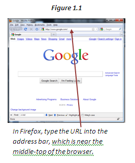
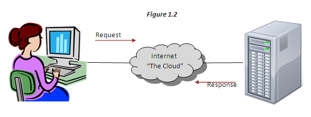

Browsers
Which Web browser do you prefer to use? A Web browser is a program on a computer that displays Web pages and allows the user to browse the Web easily. You may be familiar with Internet Explorer, Google Chrome, Safari, Firefox, or Edge. These are all Web browsers. They provide handy features such as placing Web pages in multiple tabs for easy viewing, saving favorite Web sites, and easily navigating backward through your history.
URLs
To get started with a Web browser, we often set up a homepage at a search engine such as Google or Yahoo! in order to make browsing even easier. Other times, one begins browsing the Web by typing in a specific Web address. These addresses are called Uniform Resource Locators, or URLs, and every Web site has one. This URL may be in the form of an IP address (a set of numbers separated by periods) or a domain name (e.g. www.somewebsite.com). Additionally, specific Web pages may have an extra path or filename which is added to the IP/domain with a forward slash ( / ). For example, www.somewebsite.com/path/filename.html.

Request-Response Pattern
Whenever you type in an address, click on a hyperlink, or submit a form, your Web browser (also called a "client") makes a request that is sent out into the Internet cloud. This request includes information about the Web page you are trying to reach and the computer you are using. When the server that holds the page receives the request, it sends a response back to your computer. This response will be the Web page that you requested, or it will be a message about how the server could not find, create, or deliver the page you requested.

Modern browsers also have development tools which allow you to see the real-time hierarchical structure of the HTML by inspecting the elements of the page. Right-click on any element of the page and choose the "Inspect" option to examine the code as the browser has understood it, rather than how it was delivered by the server. A well-coded web site will not have much difference between how the code was delivered versus how the code was understood by the browser.
HTML and CSS
Together, HTML and CSS are read by the web browser to render the visual representation of what you see when you open a web page in a web browser.
HTML - The acronymn HTML stands for HyperText Markup Language. The word HyperText implies that it is used for text-based content with hyperlinks to connect resources in a logical way. The term Markup Language implies that you use this code to "mark up" or add syntax to your content in order to give it more features than simply being a text document.
The primary purpose of HTML is to organize your content in a way that is meaningful for your audience, including human visitors, search engines, and even the browser itself. For example, there are 6 levels of headings that can be used to title your content in a hierarchical way. As another example, listed data can be put into two different kinds of list structures: an unordered (bulleted) list or an ordered (numbered) list.
CSS - The acronymn CSS stands for Cascading Style Sheets. In a future lesson we will learn more about the "cascade" but for now we will focus on the style sheets themselves.
The primary purpose of CSS is to format your content for your human visitors. This is where most of the work will be when we convert designs into sites. This is accomplished using CSS properties which have adjustable values, such as font-size.
Web Design vs. Web Develop
In essence, web design refers to both the aesthetic portion of the website and it’s usability. Web designers use various design programs such as Adobe Photoshop to create the layout and other visual elements of the website.